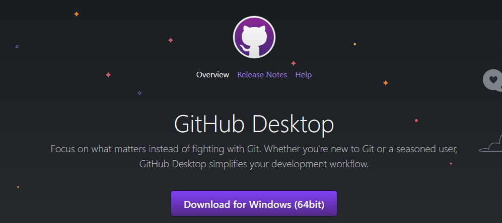
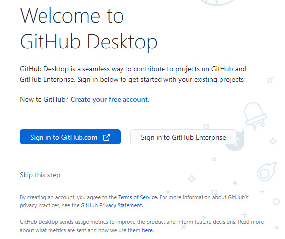
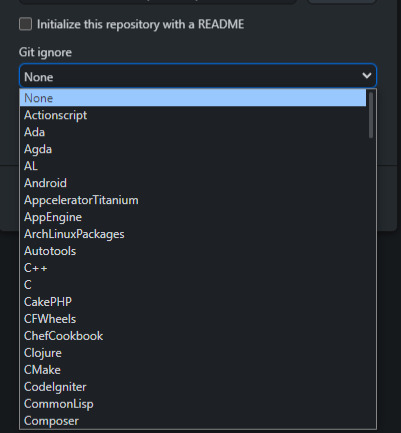
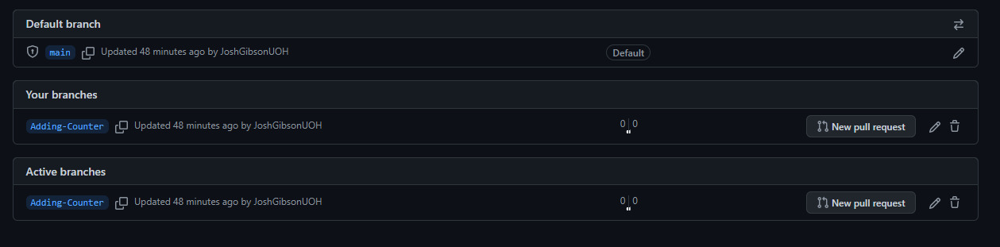

Using GitHub with GitHub Desktop
GitHub Desktop Setup
Before setting up and using GitHub desktop you must first ensure you have registered for a GitHub account: If you haven’t yet done so follow the tutorial found here: [TODO; In Web, Link]
Once you are fully registered you can follow the below steps to setup and use GitHub Desktop.
Step One:
Navigate to https://desktop.github.com/ and press the Download for Windows button displayed on the page.

Step Two:
Go to the location you downloaded the file to and run the executable file.
When the program has finished installing GitHub desktop will automatically launch.
Step Three:
When prompted, click the button that says; “sign in to GitHub.com” and sign into your recently created University GitHub account.

Depending on how your PC is setup, and if you are currently logged into GitHub different things may happen, including:
- A login prompt opening in a different browser to the one you already use (this usually happens if Microsoft Edge is set as a default browser)
- A login prompt opening in your current browser
- An automatic redirection to the authorization screen.
All these alternatives result in the same outcome – you just need to be sure to log in using your University GitHub details as normal, if you are currently logged in to your personal GitHub in your browser you may need to log out and log in again using your university account.
When logged in you may see a window like the one below:
Click the big green “Authorize Desktop” button to allow GitHub desktop to link to your account.
You may be presented with a security prompt, this is completely normal, and you are free to press open.
When this is completed the GitHub desktop app will automatically refresh and will open a new window asking you to configure Git either by using your GitHub account name and e-mail address or by configuring it manually. Leave this at the default setting and after ensuring the account you are logging into is the correct one, press the finish button.
You will then be redirected to the GitHub desktop application and are free to begin creating repositories.
Creating a repository
For more information on what repositories (and other git features) are, visit the “GitHub Concepts” section here
Now you have access to the GitHub desktop application, you can begin to create repos that we can manage using GitHub. Your main desktop screen should look like the image shown below.
We are going to start by creating a new local repository, which means it will be saved on the PC we are currently on. We do this by clicking the “Create a New Repository on your hard drive” button.
When you click this button, a new window that should look like the one below will appear.
Within this form do the following:
Set repository name to be “My First Repository”
Set the description to be “This is my first repository!”
Press the “Choose” Button() to the right of “local path” and navigate to your documents folder. I would strongly suggest creating a folder within your documents called “Repos” or “Repositories” to keep your repos in an easily accessible place.
Note GitHub can only create repositories in folders that do not currently have files within them, so if you are going to create more repositories in the future you should create a folder that will hold them within your repos folder.
Click the “Initialize this repository with a README” check box, whilst this isn’t vital at this point it is good practice for the future.
For now, leave both “Git ignore and License” on their default “None” setting.
When you have completed all the above your Create a new repository box should look the same as the one below (although your local path should be different!)
If you are happy with your inputs press the “Create repository” () button to create your repository locally.
After clicking this button, you will realize that the GitHub desktop window has changed and has brought you inside your repository. Like the screenshot below.
There’s a lot going on here, and we will cover all of it eventually, but for now we are going to focus on things specific to uploading our repository for the first time.
In the top left-hand corner, there is a section called “Current repository”
As we just created it, we have been automatically placed into the “My-First-Repository” repository, but in the future if you are making changes to a repository make sure the correct one is selected in the top left hand corner.
In the middle of the screen, you can see we have various options, the one we are going to focus on first is the “View the files of your repository in explorer” option.
This will allow us to view the repo that we have just created on our machine. You can use the shortcut provided by GitHub in future if you wish but for the purpose of this demonstration press the “Show in Explorer” () button.
This will open up the repo that you have just created in file explorer. Which should only have two files in it.
Only basic for now, but over times repos can get very complicated! Checking the file structure of a repo before uploading it is a good way of checking to make sure that everything looks correct, and that you aren’t missing any important files or folders.
Now we have created our new repo, and checked its contents, we need to push it to GitHub so it can be accessed online, to do this click the “Publish repository” () button that is visible on the top right-hand side of the screen.
Pressing this button will bring up another dialog box, that allows you to confirm the settings you entered previously. And set the privacy and organization that your repo is going to belong to (if any)
For now, leave all of the settings set by GitHub desktop as default, and press the blue “Publish repository” () button at the bottom of the window.
GitHub desktop will load for a few seconds, and load back into the repository overview window, although this time a new option will be added “Open the repository page on GitHub in your browser.”
Use the shortcut to open your repo in the browser, or alternatively press the “View on GitHub” () button.
Your PC should open a browser window and you should be able to see the repo you just created visible on the GitHub website, like the image below:
If this worked, well done! You have just created your first GitHub repo using GitHub desktop.
Accessing A Repository
Ok! So now we have managed to be able to create a repository of our own locally and upload it to GitHub the next step is to find a repository on GitHub and make it accessible locally on our PC.
This is useful for various reasons, the first of which is collaborative working, as you may be joining a project after it’s inception, meaning that the repo that has been created. Or you may wish to use a tool, library or code that someone else has made to help you in a project that you are creating, in order to do this, you will need to create a local version of it that you can access.
To access a repository that already exists we must first navigate to the correct section in GitHub desktop. To do this we need to click File -> Clone Repository (alternatively you can use the CTRL+SHIFT+O shortcut)
After accessing you will notice that the “Clone a Repository” window opens which gives you various options that you can access, the first of which are your current repos that exist on GitHub’s servers – this may only be GitHub-Lab1 for you if this is the first time you have accessed this, or you may have several repos present if you have been using Git for a while.
This is useful for if we wish to access our Repo on a new device, we haven’t used it on before, allowing us to make a local copy, that we can display for others to test, or if we wish to make changes in a different environment, updating the server version when we have finished and making them accessible from anywhere – but more on this later!
For the purpose of this tutorial, you are going to create a local version of repository that I have created for you.
To do this you must click on the URL button that is present at the top of the Clone a repository window (), which will take you to the clone a repository from URL window.
From here we first need to enter the URL of the GitHub repository that we wish to clone. For the purpose of this lab the URL you need is:
https://github.com/JoshGibsonUOH/GitHubTutorial
You should then create a folder named Lab 1” within your previously created local repos folder and alter the “Local Path” field to point towards it.
and then click the clone button ()
If done correctly the UI will update to display that the repository is being cloned. And you will then be redirected to the familiar GIT repo window that appeared when you created your first repo, but you will notice that your current Repository is now “GitHubTutorial”
Open the folder that contains the files to ensure that the repo has cloned properly, and you should see a folder alongside the files generated by GIT.
If you see these, well done! You’ve cloned your first repository.
Making Changes To A Repository
As you have probably identified, the first repository you created doesn’t actually include any code – so let’s add some!
Navigate to the repo that you cloned in the previous section, and within it you will once again see the cloned folders:
We are going to take the three items below, and copy them into the “My First Repository” repository you created previously.
When completed your “My First Repository” repo should look the same as the image below in file explorer
Re-open GitHub desktop and you will be greeted with a whole host of new data, as the application has recognized that the folder has changed and has listed all the changes for you.
These are all of the indiviual files that were present within our “GitHub Console Project” folder. Files that are new to your repo are represented with a green plus sign()
If these files have source code that can be viewed, you can click on them and the UI will update showing what changes are going to be made. You can have a click through them all if you like but for the purpose of this demonstration we are going to scroll to the bottom of the list and view “Program.CS”.
New changes to the repo are highlighted in green. As we are adding a whole new folder to the project everything is highlighted in green – but this will change in the future!
Now we have added our program to our local file we need to push it to our GitHub repository and add it to the one that is saved within GitHub itself.
To do this we need to navigate to the bottom left hand corner and the boxes that say “summary and description”
In the summary box we are going to write an overview of what we have just added to our project, and in the description box provide a bit more detail.
It is vitally important that you get used to doing this – and doing this well.
Commits should clearly identify what was changed at a glance, and should be easily understandable to anyone who is accessing the project for the first time. This will not only help collaborators on your project but also future you, you may be coming back to look at a project after time away.
In the Summary box we are going to write “Added GitHub Console Project To Repo”
And in the description “Moved the GitHub Console Project folder into the My-First-Repository Repo to view changes in behaviour”
Description automatically generatedWhen completed your changes should look like the this:
When you are satisfied click the commit to main () button and this will update GitHub desktop and tell it that locally this is our most up to date version of our project.
The changes will disappear from the UI (as they now aren’t changes, they’ve been committed to the project) and the UI will refresh and tell us that we have commits that are waiting to be committed to our origin file on GitHub – so lets do this!
On the toolbar at the top of the window you will notice that the “Publish Repository” button that we used previously has been replaced with a “Push Origin” button () that will push our changes to GitHub and make them accessible online.
Press the button and allow the GitHub desktop application to make the changes, when they are complete the “Push Origin” button will be replaced with one that says “Fetch Origin” () when this happens you know the upload process has been complete.
Reopen the project in the browser and you should see the updated project with the GitHub tutorial project file included. Like the image below.
Tracking Changes in a repo
In windows explorer navigate to your My-First-Repository repo and open the project in Visual Studio.
Edit the code in any wat you like, add things, delete things, make your console have a different foreground and background colour, the possibilities are endless!
When you have completed this process, and your code looks completely different save your changes and return to the GitHub desktop application.
You will notice that GitHub Desktop has automatically picked up the changes, and you are seeing some new symbols.
A red minus sign next to a change()means that a file has been removed from a project. And an orange circle next to a change () means that a file has been edited.
Navigate again to “Program.cs” and depending on how you wrote your program you should see some changes.
Lines of code that are highlighted in red have been removed from the program.
Lines of code that are highlighted in green still represent items that are new to the program.
Commit your changes to your GitHub repository, make sure you use a clear and well defined summary and description that show what changes you have made.
We have now made two changes to the same repository, and GitHub desktop makes it easy to look back over these changes.
From the main repo overview screen, alter the window that shows your changes to show change history by clicking the history button () located at the top of the window.
If you have done this correctly it should look like the window below:
As you may have noticed the commits are named using the summaries you used when committing them and the descriptions are visible at the top of each commit, this is one of the reasons that it is so important to ensure that these commits are named clearly and are easy to understand, imagine having to sort through 200 of these to find something specific and they are all named a variation of “commit #002”.
You may have also been introduced to a new symbol, a blue arrow () this means that an item has been renamed.
If you’ve reached this point that means you can now add to, and track changes in a repo – well done!
Reverting Changes
Oh no! you’ve got too fancy with your colour choices and have broken your program and want to change this back.
Do not worry! We can do this using GitHub desktop.
From the history menu you accessed in the previous section navigate to your most recent commit, and right click on it, you will be greeted with a selection menu within it. Click “Revert changes in commit” to remove your changes.
After pressing this you will notice that a commit has been added to the history section that represents the removal of the commit you made earlier.
A black and white screen with white text
Description automatically generated
Also, the “Push Origin” button () at the top of the screen is also once again available to be used.
Press the “Push Origin” button to make your changes to your GitHub repository.
Access the web version of GitHub as previously and you should see that the removal of the commit has now been completed. If you wish to double check this you can navigate to the “Program.CS” by using the folder structure on the GitHub website to see if it back to the original. It should look similar to the one below:
Furthermore, your local version will also automatically update. Navigate to your repo folder and reopen your “GitHub Tutorial” solution.
You should see that the code has reverted back to it’s original solution, like below.
Also don’t worry if you change your mind – you can always revert the revert!
Branching in GitHub desktop
Git Ignores
As we are now going to be going through the process of using branching and merging effectively in our project now is a good time to introduce the topic of the Git Ignore system and why we use it.
Git ignore files (shown as .gitignores) are files that specify certain files from your current working directory that will be ignored by the git service you are using when completing commits.
Git Ignore files usually consist of machine generated files such as build artifacts or temporary files and logs generated when testing. These files are not needed by the main project repository and can take up unnecessary space whilst also making the committing process more complicated.
GitHub desktop has a selection of common Git Ignore files that you can add into your document when creating a repository. You can do this by selecting the required Git Ignore when you’re creating a repository.
When in the Create a new repository wizard click the “Git ignore” dropdown and you will see a list of the pre-installed Git Ignored that come installed with GitHub desktop.

For C# programs we want to use the “Visual Studio” Git Ignore, scroll down and find “Visual Studio” in the list and click on it. This will ensure the correct files are not uploaded when you push commits. When you have done this it should close the dropdown and the Git ignore file you chose should appear in its place.

You are then free to create your repository as normal.
To ensure your Git Ignore file has been added as expected, view your repo in windows explorer begore you push it up to GitHub. You should be able to see the Git Ignore file.
If you are using Unity to create a project (or other engines) ensure that you have chosen the requisite Git Ignore file to go with them, as if you don’t these programs can struggle with source control which may affect your project. GitHub desktop provides inbuilt Git Ignored for Unity, Unreal and Godot which should all be used.
Branching
Create a new Git repository called “Branch Testing” using GitHub desktop and push it to GitHub
When your repository is created and visible in GitHub desktop the next step is to create a new branch that you are going to work on. In order to do this, navigate to the top of the screen and click the “Current branch” () button.
This will open a new window that allows you to create a new branch as well as viewing the ones that are already active. The window should look like the one below.
To create a new branch click the “New branch” button( )
A new window should pop up asking you to name your new branch:
Name your branch “Adding Counter” and press the “Create branch” ( ) button to add the branch to your project.
You will be redirected back to the repository window and on first glance it will not look like much has changed. But on further investigation you will see that your current branch has changed from “Main” to “Adding-Counter”.
This means that any changes you make (or add) will be added to the branch and not the main repository.
Before we begin to make changes to our branch, similar to when we create a new repository, we need to publish the branch to GitHub so it is accessible from everywhere and not only on the local device, we do this in exactly the same way that we normally would a repository, by pressing the “Publish branch” ( ) button.
) button.
To check your branch has been published successfully press the “View on GitHub button” ( ) from inside GitHub desktop or press the shortcut keys (Ctrl+Shift+G). This will take you to your repository on the GitHub website.
You may be greeted with a prompt that asks if you would like to project your Main branch:
I would strongly suggest doing this by pressing the “Protect this branch” ( ) button.
This will redirect you to a window with multiple options that you can use to protect your branch, that looks like the one below:
What you wish to do with these settings may differ in the future, depending on how you (or your team) like to set out your workflow, for now we are just going to tick “Require a pull request before merging” ( ) keeping the options to their defaults and press the “Create” ( ) button.
You will then be asked to enter your password and confirm. Do this and you will be redirected back to the settings and your branch protection rules will be added.
When you have done this click the name of your repository at the top of the screen and you will be returned back to the main repository screen:
From the main repository screen navigate to the section that says branches above the information about your repo and click on it.
This would redirect you to a screen that lists all of your branches, if you added the “Adding Counter” branch successfully earlier you should be able to see it listed here, like the screenshot below:

If your branches section looks like this, then congratulations! You just made your first branch.
Merging in GitHub desktop
Now we have created our branch the next step is to complete a merge back into our project. To do this we must first make some changes to our branch.
Create a program inside of your local GitHub repository that counts from 0 to 100 and commit that repository to your branch.
Now we have completed some code in our program that we know works we are free to merge that back into our master branch. To do this we must first create a pull request.
To do this from inside GitHub desktop go back into the branches window by clicking on the “Current branch” () button at the top of the screen.
When the branch management window opens change the selection at the top of the screen from “branches” to “pull requests” by clicking on the appropriate button.
From inside the “Pull Requests” window you should then click the “Create A Pull Request” option which will then redirect you to the GitHub website.

The pull request window will be displayed which contains a lot of information about the branch that we are currently attempting to merge.
The first thing you will notice is that the branch we are currently working on can be automatically merged, as shown by the prompt at the top of the page.
The reason for this is that we are only adding to our repository, we haven’t changed or deleted anything that could stop our project from working.
Underneath that you will notice a Name and Description that will accompany your pull request. If you added these when you pushed to your branch (which you should!) these values will be populated for you.
As when pushing it is vital that these fields are easy to understand and make it clear what is present within the branch, as someone else may be checking the code that is being merged and may need some clear information.
Do not create your pull request yet! First scroll down and you will be able to see all of the changes that are being made to the repository. You will notice that these items look very similar to the GitHub desktop interface when are a pushing changes to our project, with items that are highlighted in green representing items that have been added to the repository.
When you have finished looking through your changes scroll back to the top of the screen and press the “create pull request” () button. This will create a Pull Request that tells GitHub you wish to merge this project into your main branch.
You will then be relocated to the Pull Requests window which shows information about the request you have just made, and gives you the ability to add it to your project.
As mentioned previously as this file makes no changes to the existing project it can be merged automatically, and GitHub will remind us of this here.
If you are happy with the outcome of this Pull Request, then you can click the “Merge Pull Request” () button.
The button will then change to a confirmation to ensure that you wish to make this decision, click the “Confirm merge” () button to commit your branch to the main repository.
When this has been completed the UI will change to purple to show that a branch has been merged.

If this is the case then the branch has been merged, and you are now safe to press the “Delete branch” () button to remove the branch from your project.
It is then good practice to write a comment underneath showing that you have merged and closed the branch.
When all is completed, your screen should look similar to this, showing a timeline of the branch being added, merged and then deleted.
When this has been completed navigate back to the main page of your repository, you should be able to see that the changes from your branch have been added.
You’ve just merged your first branch – well done! However, what happens if we make some changes to our program?
As our program has now changed within the main branch, we need to update our program to ensure that our local version is the same as the one on GitHub.
To do this within GitHub desktop we first have to press the “Fetch Origin” () button which will check the main branch to see if any changes have been made.
GitHub desktop should then find some changes and let you know they don’t exist on your machine, to get access to these changes press the “Pull Origin” () button which will have changed from “Get Origin” this will download the changes and make changes to them on your machine so that you have the latest version of the project.